Fartura · Brand Playground · CANDIDATO — não é a loja, não é o app
A abundância do Vale do São Francisco chegando à sua rotina — abastecendo a casa, resolvendo a fome, organizando a semana e fornecendo o negócio.
Quero conhecer CONCEITO · NENHUMA OPERAÇÃO REAL
HERO LOOP · ANIMATIC (keyframes reais + movimento simples — prova de conceito, não vídeo final)
1 · Logo — 3 candidatos (final = decisão do owner)
Um disco generoso — sol, fruta, prato — cuja abertura aninha a fruta que vai para a mesa. A emoção da Direção A com a linguagem digital da Direção C: a rota origem→mesa vira gesto, não ícone de mapa.
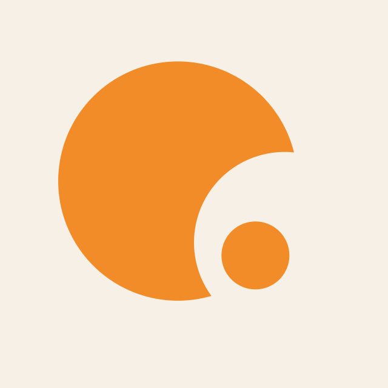
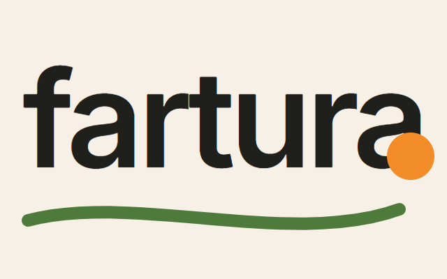
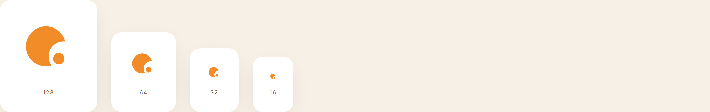
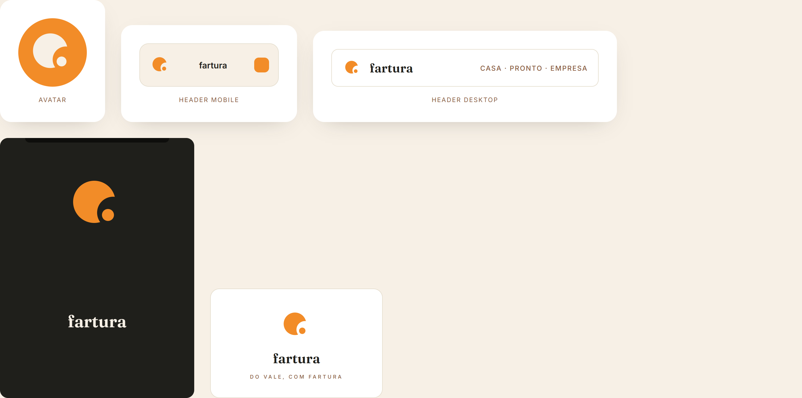
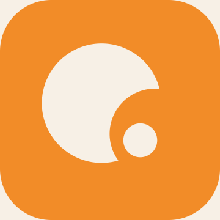
2 · Paleta + tipografia
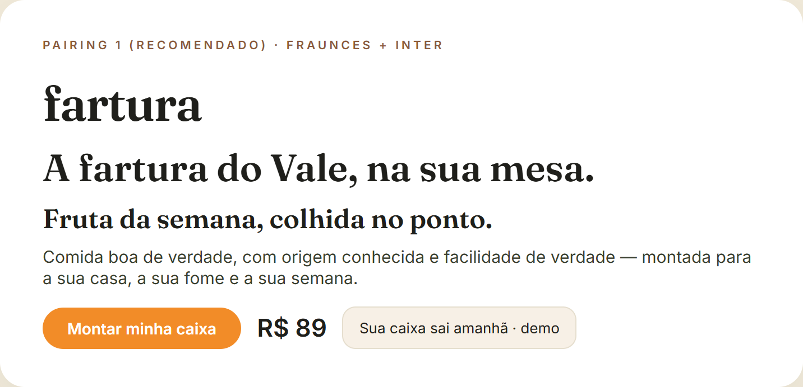
3 · Direção de imagem
Luz dourada natural, mesa servida, feira generosa, produtor de verdade. Biblioteca inicial com fotografia real licenciada (Pexels) — mídia conceitual é sempre rotulada.
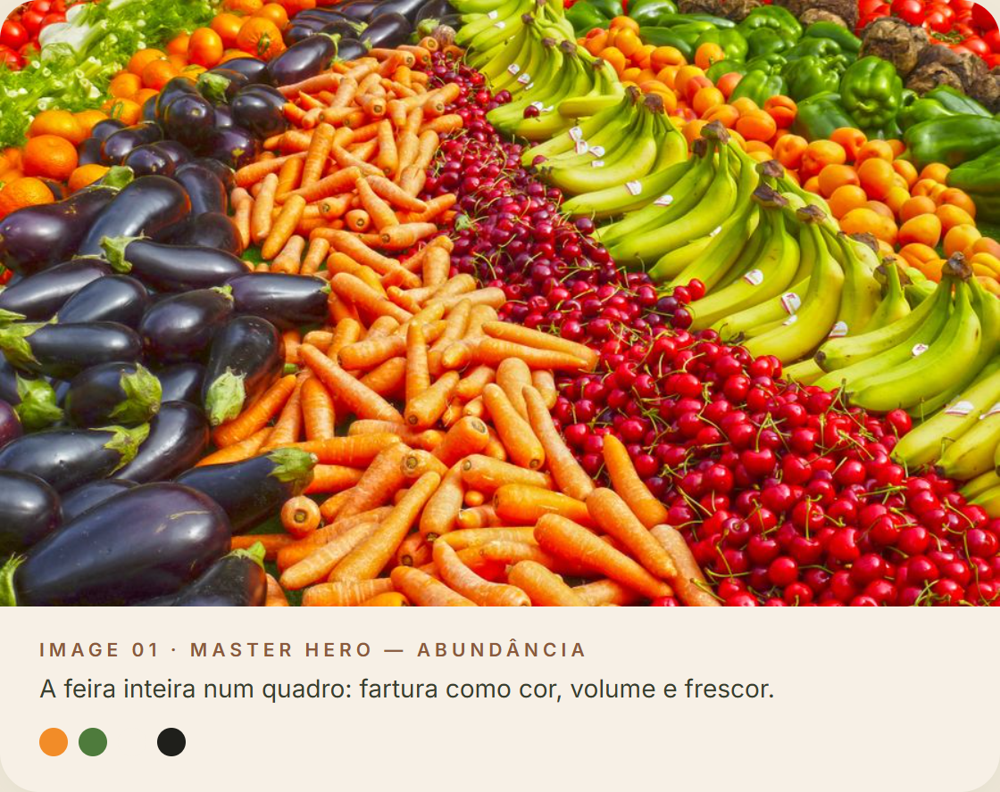
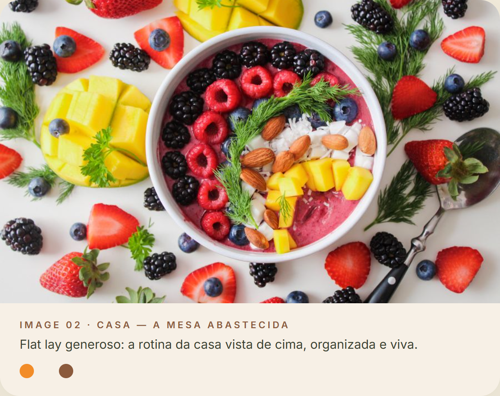
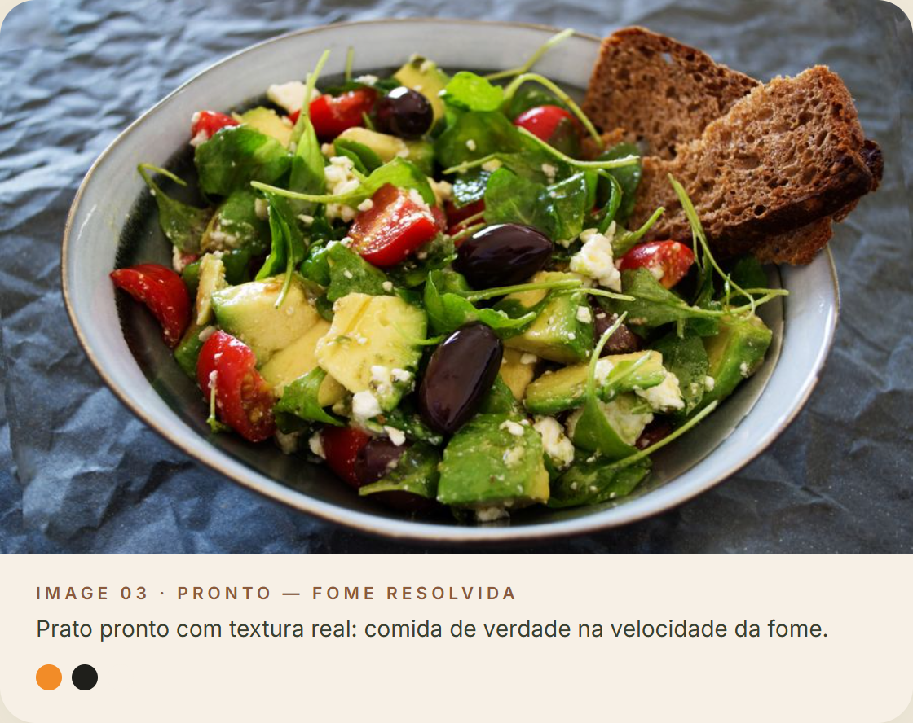
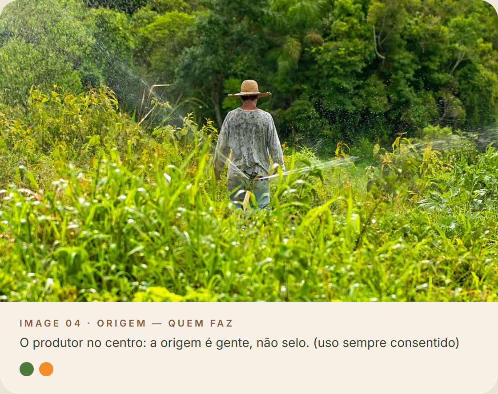
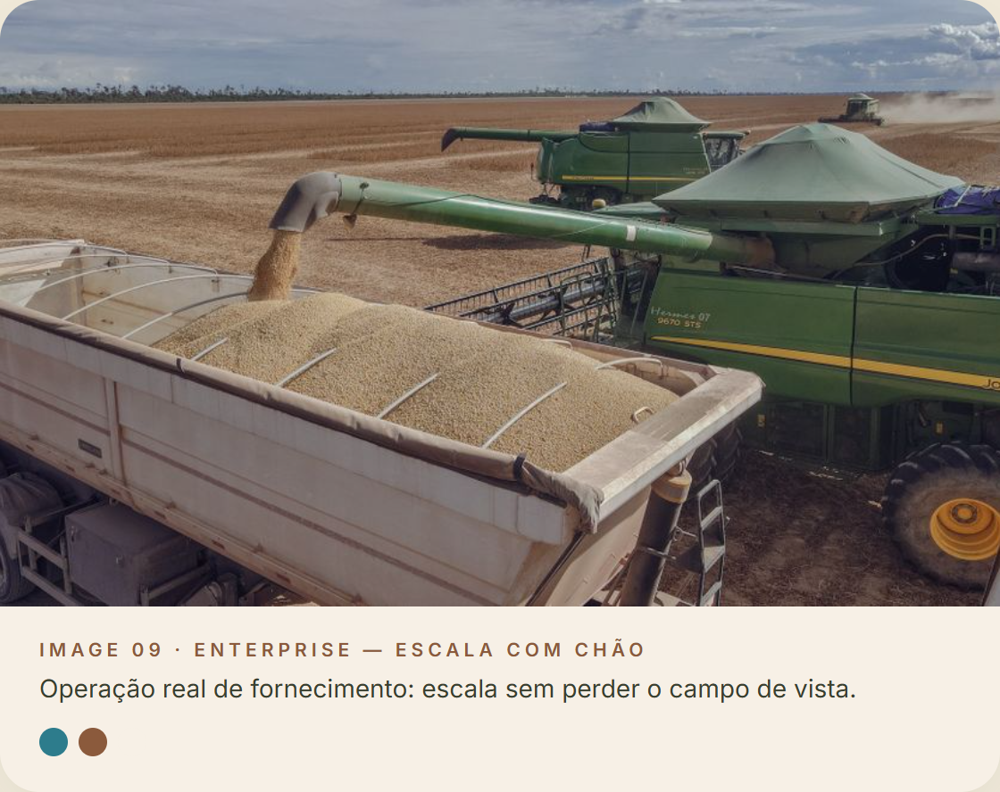
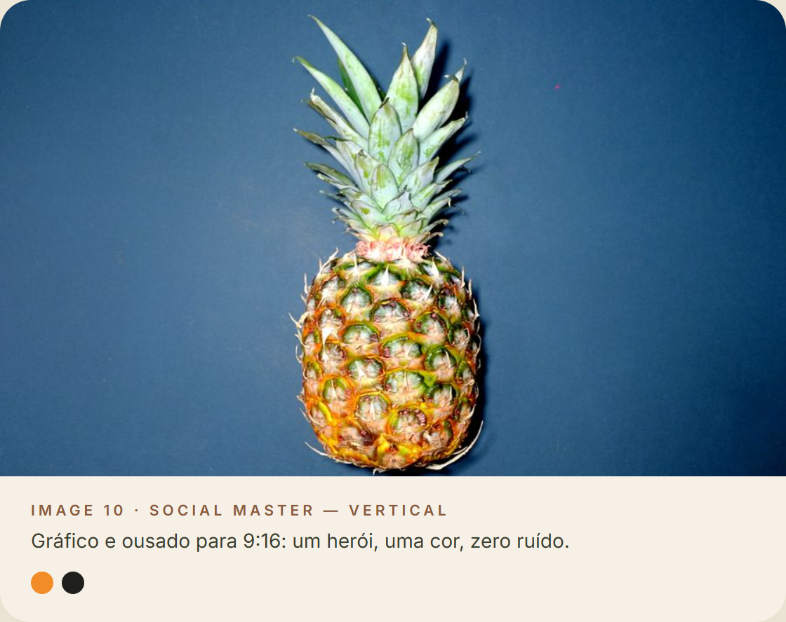
4 · As frentes
Todas as imagens: fotografia real licenciada (Pexels) usada como DIREÇÃO DE ARTE — não representa produto, produtor parceiro ou operação.
5 · Brand film — animatic de candidato
Storyboard montado em movimento (prova de ritmo e copy — não vídeo final). Copy: 3 momentos. Som: direção — brasileira contemporânea acústica, percussão leve, sem sertanejo clichê.
Geração de vídeo IA: indisponível neste ambiente (sem credencial) — e bloqueada por direção para mídia agrícola. Próximo passo natural: filmagem real no Vale.
6 · Logo motion — 1,3s
Decisões solicitadas ao owner
Aprovar direção
Todos os ativos: STATUS = CANDIDATE até aprovação. Playground não possui carrinho, checkout, auth, banco ou pedidos.